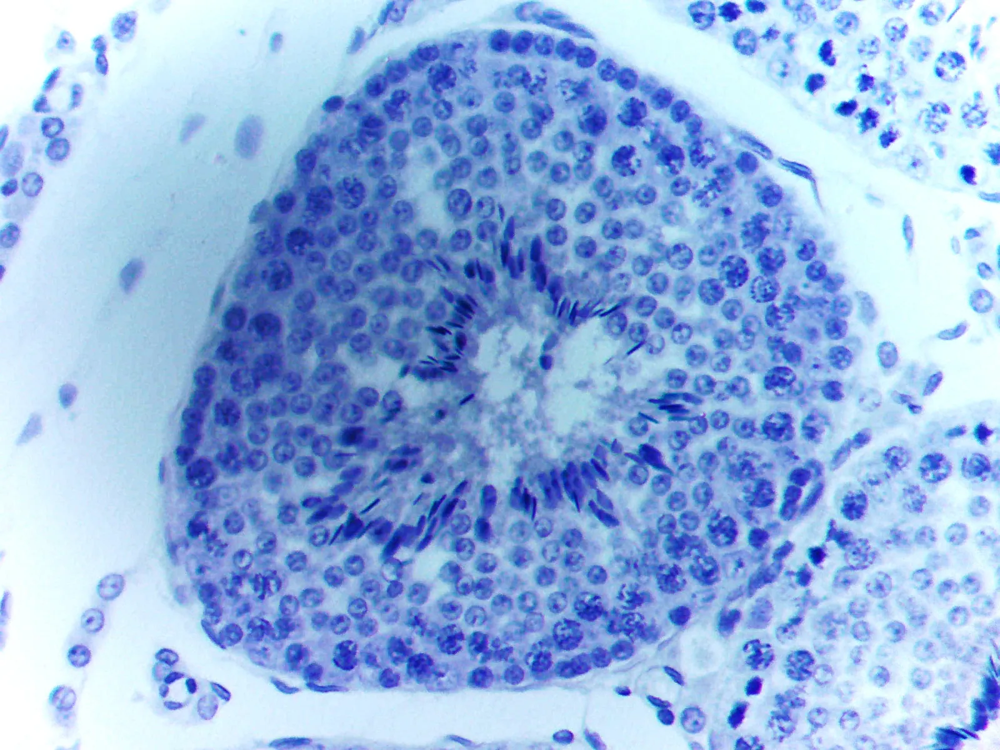

Lâmina 74 · Sistema reprodutor
Testículo (túbulos seminíferos)

Toque na imagem para ampliar. No computador, use as setas do teclado para trocar de imagem.
Lâmina 74 · Sistema reprodutor

Toque na imagem para ampliar. No computador, use as setas do teclado para trocar de imagem.